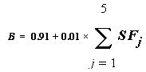
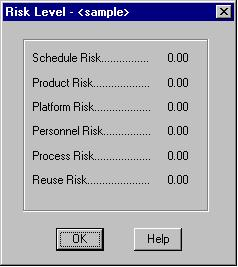

FIGURE 1-11 Create Sample Module and give values to SLOC and Labor Rate
COCOMO (COnstructive COst MOdel) is a screen-oriented, interactive software package that assists in budgetary planning and schedule estimation of a software development project. Through the flexibility of COCOMO, a software project manager (or team leader) can develop a model (or multiple models) of projects in order to identify potential problems in resources, personnel, budgets, and schedules both before and while the potential software package is being developed.
The COCOMO software package is based upon the software cost and schedule estimation model: COnstructive COst MOdel version II (COCOMOII). This is the newly revised version of the original COnstructive COst MOdel (COCOMO) first published by Dr. Barry Boehm in his book Software Engineering Economics, Prentice-Hall (1981), and Ada COCOMO (1989) predecessors. The current model is described in [Boehm et al. 1995]
The primary objectives of the COCOMOII.1998 effort are:
This version of USC COCOMOII implements stage 3 formulas to estimate the effort, schedule, and cost required to develop a software product. It also provides the breakdown of effort and schedule into software life-cycle phases and activities from the original COCOMO manual. These are still reasonably valid for waterfall model software projects, but need to be interpreted for non-waterfall projects.
Estimate effort with:
(EQ 1-1)
1.1.2 Schedule Estimation Equation
Determine time to develop (TDEV) with an estimated effort, PM, that excludes the effect of the SCED effort multiplier:
Equation 1-2 defines the exponent, B, used in Equation 1-1. Table 1.1 provides the rating levels for the COCOMOII scale drivers. The selection of scale drivers is based on the rationale that they are a significant source of exponential variation on a project’s effort or productivity variation. Each scale driver has a range of rating levels, from Very Low to Extra High. Each rating level has a weight, W, and the specific value of the weight is called a scale factor. A project's scale factors, Wi, are summed across all of the factors, and used to determine a scale exponent, B, via the following formula:

For example, if
scale factors with an Extra High rating are each assigned a weight of (0),
then a 100 KSLOC project with Extra High ratings for all factors will have
SFj = 0, B =
1.01, and a relative effort E = 1001.01
=
105 PM. If scale factors with Very Low rating are each assigned
a weight of (5), then a project with Very Low (5) ratings for all factors
will have SFj = 5, B
= 1.26, and a relative effort E = 331 PM. This
represents a large variation, but the increase involved in a one-unit change
in one of the factors is only about 4.7%.
SLOC: Lines of Code Counting Rules
In COCOMOII, the logical source statement has been chosen as the standard line of code. Defining a line of code is difficult due to conceptual differences involved in accounting for executable statements and data declarations in different languages. The goal is to measure the amount of intellectual work put into program development, but difficulties arise when trying to define consistent measures across different languages. Breakage due to change of requirements also complicates sizing. To minimize these problems, the Software Engineering Institute (SEI) definition checklist for a logical source statement is used in defining the line of code measure. The Software Engineering Institute (SEI) has developed this checklist as part of a system of definition checklists, report forms and supplemental forms to support measurement definitions [Park 1992] [Goethert et al. 1992].
Figure 1-1 shows a portion of the definition checklist as it is being applied to support the development of the COCOMOII model. Each checkmark in the "Includes" column identifies a particular statement type or attribute included in the definition, and vice-versa for the excludes. Other sections in the definition clarify statement attributes for usage, delivery, functionality, replications and development status. There are also clarifications for language specific statements for ADA, C, C++, CMS-2, COBOL, FORTRAN, JOVIAL and Pascal.
The "COCOMOII line-of-code definition" can be calculated in several ways. One way is to use the software program, Amadeus[Amadeus 1994] [Selby et al. 1991]. Another software program is code count.
The function point cost estimation approach is based on the amount of functionality in a software project and a set of individual project factors [Behrens 1983][Kunkler 1985][IFPUG 1994]. Function points are useful estimators since they are based on information that is available early in the project life cycle. A brief summary of function points and their calculation in COCOMOII is as follows.
COCOMO II 2000.3 provides two measure methods. One is 'Input Calculated Function Points', the other is 'Using Table'. And there two function points ratio types provided by Capers Jones and David Consulting Group. Choose one of two ratio types.
The method 'Input Calculated Function Points' is to input the number of function points directly into the field. Then COCOMO II estimates the SLOC with the langaue you selected.
Function points measure a software project using table by quantifying the information processing functionality associated with major external data input, output, or file types. Five user function types should be identified as defined in the Table2.
Each instance of these function types is then classified by complexity level. The complexity levels determine a set of weights, which are applied to their corresponding function counts to determine the Unadjusted Function Points quantity. This is the Function Point sizing metric used by COCOMII. The usual Function Point procedure involves assessing the degree of influence (DI) of fourteen application characteristics on the software project determined according to a rating scale of 0.0 to 0.05 for each characteristic. The 14 ratings are added together, and added to a base level of 0.65 to produce a general characteristics adjustment factor that ranges from 0.65 to 1.35.
Each of these fourteen characteristics, such as distributed functions, performance, and reusability, thus have a maximum of 5% contribution to estimated effort. This is inconsistent with COCOMO experience; thus COCOMO.II uses Unadjusted Function Points for sizing, and applies its reuse factors, cost driver effort multipliers, and exponent scale factors to this sizing quantity.
1.1.6 AAF: Adaptation Adjustment Factors
Adaptation of Existing Code
COCOMO is not only capable of estimating the cost and schedule for a development started from "scratch", but it is also able to estimate the cost and schedule for products that are built upon already existing code. Adaptation considerations have also been incorporated into COCOMO, where an estimate for KSLOC will be calculated. This value will be substituted in place of the SLOC found in the equations already discussed. This adaptation of code utilizes an additional set of equations that are used to calculate the final count on source instructions and related cost and schedule. These equations use the following values as components:
There are a number of contributing factors to a project’s delivery time and effort. Development productivity was found to be affected by additional factors that were found to fall under the headings: product attributes, platform attributes, personnel attributes, and project attributes.
Product attributesrefer to the constraints and requirements placed upon the project to be developed. These included
These 16 factors (or effort multipliers) are incorporated into the schedule and effort estimation formulas by multiplying them together (see Figure 1-7 for the COCOMO dialog box). The numerical value of the ith adjustment factor (there are 16 of them) is called EMi and their product is called the adjustment factor or EAF. The actual effort, PMtotal is the product of the nominal effort times the EAF.
In addition to the 16 EAF factors there are two user defined factors named USR1 and USR2. Their initial values are all set to 1. They may be redefined by using the Parameters-User Defined EAF menu item.
A final effort multiplier, Required Development Schedule (SCED) is treated separately as it operates at the overall project level rather than potentially varying from module to module.
This software is a stand-alone software system intended for a single user. The software is user interactive in that it attempts to interface well with a user's needs, using extensive mouse interaction wherever possible.
On the screen in Figure 1-3 is the CLEF (Component Level Estimation Form). This is where all of the entered information will be displayed. The top of the screen shows all of the subfunctions which the user may call. The choices appear in pop down menus according to the major headings of Project, Model, and Phase.
In order to efficiently use COCOMO, you must become familiar with the Component Level Estimating Form (CLEF). The different sections that are to be discussed have been given a corresponding number. These sections are given a descriptive label as a point of reference as well as a summary of their contents and functions
The sections found in Figure 1-3 and their descriptions are as follows:
1. Main Menu bar - This area contains the menu selection of the main functions of COCOMO. These selections are File, View, Edit, Parameters, Calibrate, Phase Distribution and Help. File, View, Edit, Parameters, Calibrate, and Phase Distribution are discussed in chapters 2, 3, 4, 5, and 6 respectively. Help is the selection used to receive on-line assistance with the available functions.
2. Tool bar - This area contains image buttons like other windows applications for New Project, Open Project, Save Project, Delete Module, Copy & Paste, Insert clipboard content, Insert a module, and About functions.
3. Project Name - This editable field displays the name of the currently displayed project. To edit the name click twice upon this field and proceed to edit name. Upon completion of editing press the "Return" key. The Default name of a new project is "<sample>".
5. Module Name Column - This column is used to house the name of each module located in the Module Area. The module name can be changed by clicking twice on the desired module name box and entering the changes into the module name field. Upon completion of editing press "Return".
6. Module Size (SLOC) Column - This column is used to house the SLOC of each module located in the Module Area. The value for SLOC can be computed in one of three ways. One, the value can be entered directly in the SLOC field as shown in Figure 1-4. Two, by using the function point model as shown in Figure 1-5. Three, by using Adaptation Adjustment Factor as shown in Figure 1-6. Upon completion click on OK. There is a limit to the range of input. The inputted value for SLOC must be within the range 0 - 9,999,999.
Note - COCOMO is not calibrated for Total SLOC < 2000.
8. Effort Adjustment Factor (EAF) Column - This column displays the product of the cost drivers for each specific module. By clicking on this field a dialog box appears (see Figure 1-7). This box displays all of the cost drivers, inter cost drivers and their current ratings. The cost drivers are divided into the groupings: Product, Platform, Personnel and Project. The inter cost drivers are rated as 0%, 25%, 50%, and 75 %. The ratings for each multiplier can be changed by cycling through the available ratings until the desired rating is displayed. As the cost driver ratings are changed the total product of the cost drivers is displayed in the upper right hand corner of the dialog box along with the module name. The final rating of a cost driver is calculated using this formula for the interpolation.
9. Totals Area - This area houses the calculated results of all of the modules combined. Within this area is the total SLOC count for the module, the total nominal effort (PM), the total nominal productivity (SLOC/PM), the total estimated effort (EST PM), the total estimated productivity (Prod), the total estimated project cost, the estimated cost per instruction, the total estimated FSWP and the total estimated schedule for project completion (see each individual column for more information). The latter six quantities have not only a most likely estimate but also an optimistic estimate (no less than this, 90% of the time) and a pessimistic estimate (no greater than this, 90% of the time).
10. Status bar - This window displays a short definition of the column headings clicked upon and also displays a short description of the result of the last function initiated by the user.
11. Schedule Button - This button displays the Schedule Dialog Box as shown in Figure 1-8.
12. Scale Factor Button - This button displays the Scale Factor Dialog Box as shown in Figure 1-9.
13. Risk Column - This column contains the Total risk level for each specific module. By clicking on this field a dialog box appears (see Figure 1-10). This box displays all of the risk levels for the chosen module. The total risk of a module is computed as:
total_risk=schedule_risk+product_risk+personnel_risk+process_risk+platform_risk+reuse_risk;
total risk of a
module=total_risk/373.*100.;
For the definitions of schedule risk, product risk, platform risk, personnel risk, process risk, and reuse risk, see [Madachy 1997].
14. Full-time SoftWare Personnel (FSWP) Column - This column houses the calculated most likely estimate for the number of full-time developers that would be needed to complete a module in the estimated development time.
15. Instruction Cost Column -
This column contains the calculated most likely cost per instruction. This
number is calculated from Cost/SLOC in each module.
17. Productivity (PROD) Column - This column contains the calculated result of the module’s individual SLOC divided by the module’s most likely effort estimate.
18. Estimated Person-Month (EST PM) Column - This column holds the module’s most likely effort estimate obtained from multiplying Effort Adjustment Factor (EAF) by Nominal Person Month (NOM PM).
19. Nominal Person-Month (NOM PM) Column - This column holds the module’s most likely effort estimate without incorporating the Effort Adjustment Factors (EAF).
1.3 Begin Using COCOMO
FIGURE 1-10 Risk Level Dialog Box
To begin entering a new module, either click on the "Add Module" button on the Tool bar or on the pulldown menu item(Edit|Add Module). At this point, a new module will appear in the CLEF with all values set to their respective defaults. Double click upon the module name field in order to give the new module a name. Upon typing the module name press "Return.". A value for SLOC and Labor rate may also be given by clicking on the respective field and editing appropriately (see Figure 1-11).
FIGURE 1-11 Create Sample Module and give values to SLOC and Labor Rate
FIGURE 1-12 Totals area after calculations have been completed
Currently, there are three implementations of COCOMOII: a Windows 95/NT version, a Sun Microsystems Sparcstation version, and a Java version.
To download any these versions, you should enter this in a web browser:
http://sunset.usc.edu/COCOMOII/cocomo.html
and scroll down to the section labeled COCOMOII Downloads(Software and Documentation) or
ftp://ftp.usc.edu/pub/soft_engineering/COCOMOII/ where you will see 7 files:
c98sunos.tar.gz, c98windows.zip, c98java.tar.gz, usersman.ps, usersman.pdf, modelman.ps, modelman.pdf
To run java cocomo(Netscape Navigator3.0 or Microsoft Internet Explorer3.0 or higher), you should visit:
http://sunset.usc.edu/j_cocomo/cocomo.html